Physical World Model
물리적 세계의 상태와 변화를 이해합니다.
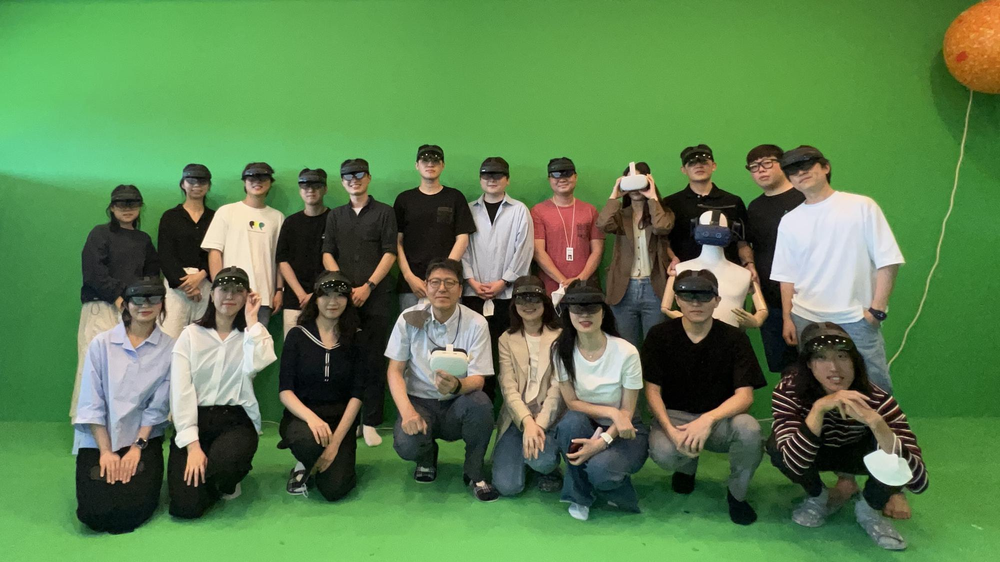
아래 일정은 잠정안이며 사정에 따라 변경될 수 있습니다. 일부 강연은 주제와 연사가 확정 전입니다.
AI가 무엇을 하는가를 넘어 왜 그렇게 하는가를 이해할 수 있는지, ARRC가 다음으로 던지는 질문입니다.
물리적 세계의 상태와 변화를 이해합니다.
인간의 행동과 관계, 의도와 상황을 이해합니다.
두 모델을 연결해 현실과 인간을 함께 이해하고 예측합니다. AI를 인간을 대체하는 기술이 아니라, 인간의 경험과 능력을 증강하며 함께 진화하는 Augmented Humanity 로 넓히려는 시도입니다.
시선과 음성, 자세와 동작, 주변 공간의 변화를 시간과 공간의 맥락 속에서 포착해 AI가 이해할 수 있는 경험 데이터로 만듭니다. AIR 로 현실의 경험을 담고, AMI(Augmented Memory Infrastructure)로 3차원 시맨틱 지식과 기억을 쌓아 갑니다.
AR for Bridge Time & Space · Transform Human Experience · Shape Augmented Humanity
서로 다른 장소에서도 경험을 나누고, 서로 다른 시간에도 경험을 이어받으며, 한 사람의 경험이 다른 사람의 새로운 경험으로 이어지는 경험 인프라를 지향합니다.
NewJam Daejeon
세계의 새로운 기술과 경험을 대전에서 만나고, 대전에서 만든 경험을 세계와 나눕니다. 대전을 AI와 XR이 실제 사람과 도시의 경험으로 학습하고 검증하는 실증 테스트베드로 키웁니다.
증강현실과 메타버스 기술이 도시와 일상을 어떻게 바꾸는지 담은 영상입니다.
2016년 개소 이후 ARRC가 지나온 연구의 궤적입니다.
지난 10년 동안 센터가 만들어 온 연구 장면들입니다.
대전광역시 유성구 대학로 291
KAIST KI빌딩(E4) 2층 매트릭스홀
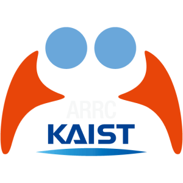
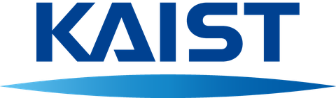
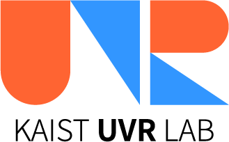
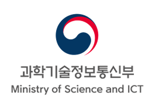
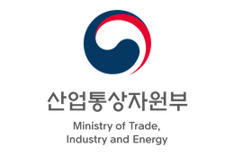
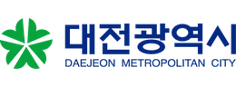
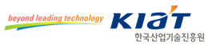
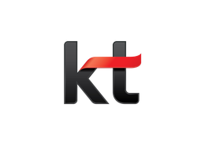
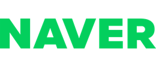
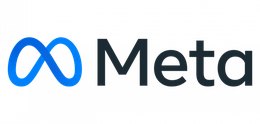
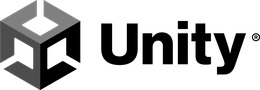
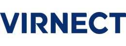
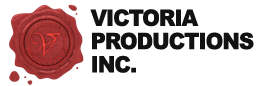
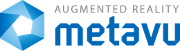
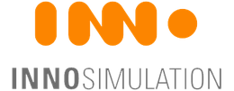
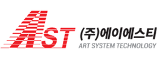